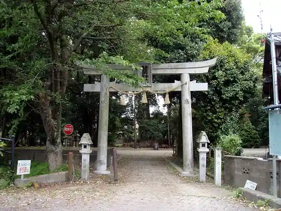
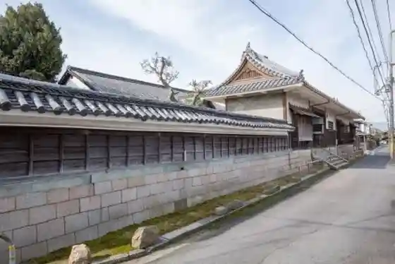
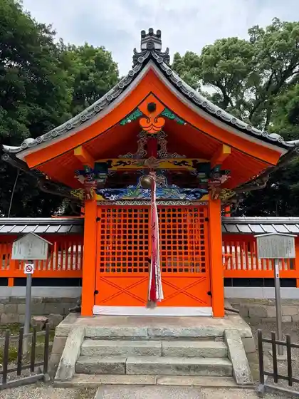

Japan / Kyoto / Kumiyama
Kumiyama · Kyoto
Kumiyama
Highlighted on the Kyoto map.
Kumiyama Town Hall

Nagare Hashi (Kamitsu Ya Hashi)
Kumiyama, Kyoto
Kyotofuritsu Fumin Supotsu Plaza (Midoriga Oka)
Kyu Yamada Ie House

KTC Mo no Zukuri Gijutsukan
Engi Shikinai Sha So Kuri Shrine

Tamada Shrine
Fureai Koryu Kan Yu Horu
Sights · Places to eat · Day-to-day services
Nearby in Kyoto: ← Kizugawa · Kyotamba →
Other towns: Ayabe · Fukuchiyama · Ide · Ine · Joyo · Kameoka · Kasagi · Kizugawa · Kyotamba · Kyotanabe · Kyotango · Kyoto · Maizuru · Minamiyamashiro · Miyazu · Muko · Nagaokakyo · Nantan · Oyamazaki · Seika · Uji · Ujitawara · Wazuka · Yawata · Yosano
All towns in Kyoto · Back to all prefectures